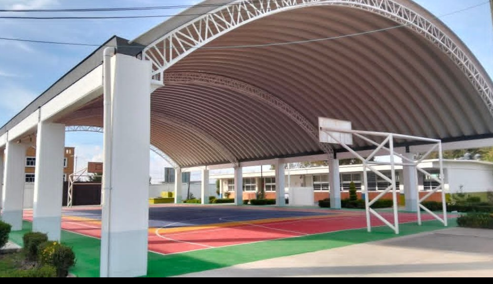
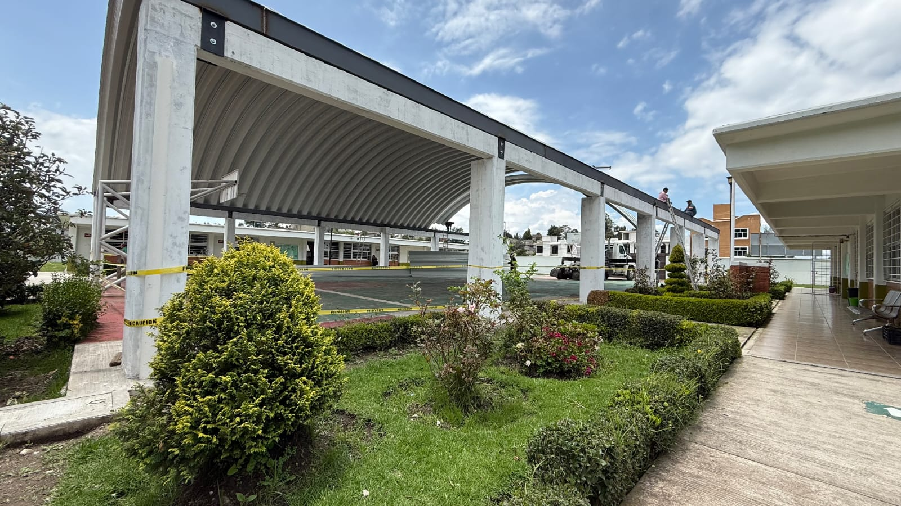
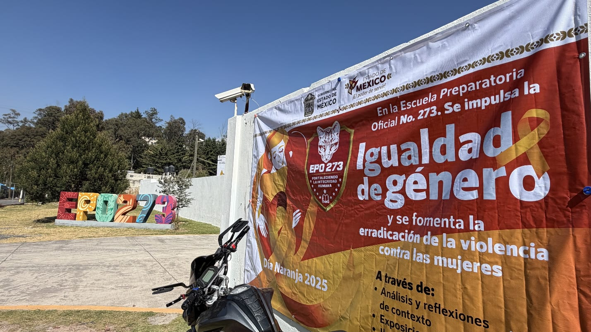
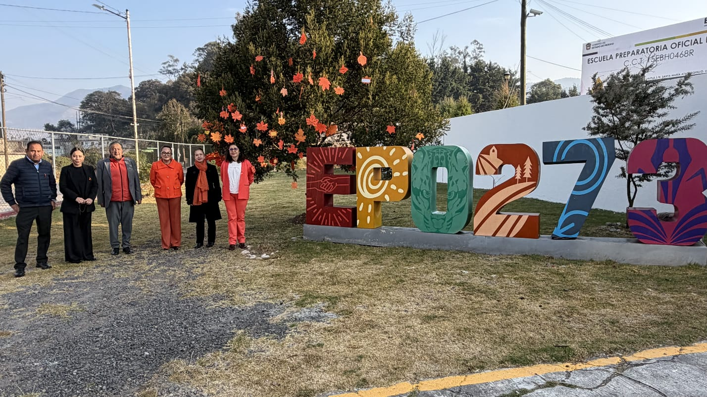
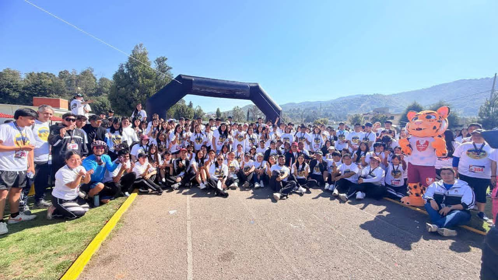

Ubicación
Antigua Carr. a Xochicuautla Santa María Atarasquillo, 52044 Lerma de Villada, Méx.

Antigua Carr. a Xochicuautla Santa María Atarasquillo, 52044 Lerma de Villada, Méx.

Contamos con 14 años de existencia en donde hemos formado generaciones integras y listas para competir en el mundo.

Somos una institución consolidada que proporciona un servicio de calidad a las generaciones que forma, mismas que son capaces de intervenir de forma ética movilizando los saberes..

Ser una institución reconocida a nivel estatal como lideres en la formación de seres humanos integros, éticos, con una visión humanista y competitiva en el ámbito escolar, laboral y social.

Honestidad, Responsabilidad, Respeto, Liderazgo, Trabajo en equipo, Comunicación asertiva, Equidad y Compromiso

El Proyecto Escolar Comunitario (PEC) tuvo como tema principal la ansiedad, un problema que afecta a muchas personas y que puede influir en su bienestar físico, emocional y social. Con el propósito de comprender mejor este tema y fomentar hábitos saludables para su prevención y manejo, el proyecto se dividió en tres partes fundamentales.
La primera evaluación consistió en la realización de trabajos de investigación sobre la ansiedad, donde se analizaron sus causas, síntomas y consecuencias. La segunda evaluación parte fue una carrera atlética, actividad que promovió la importancia del ejercicio físico como una herramienta para reducir el estrés y mejorar la salud mental. Finalmente, se elaboró una infografía con información sobre un futbolista con este padecimiento para motivar a los alumnos a que se puede salir adelante